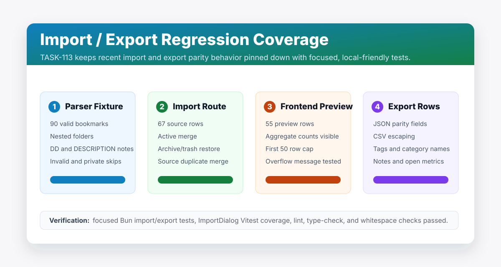

Little Imp Task Report
Import Export Regression Tests

Before
Recent import and export tasks had feature-level coverage for folder hierarchy, preview, remapping, duplicate policies, result reports, and export parity fields. The cross-feature regression suite still lacked one local-friendly large fixture and explicit CSV escaping coverage for realistic exported fields.
Problem
TASK-113 exists to keep import/export parity from regressing as pagination, filters, sorting, and aggregate work continue. The important behavior spans parser output, preview summaries, commit progress, frontend row caps, result states, and JSON/CSV export serialization.
Changes Added
- Added parser coverage for a 90-bookmark nested Netscape fixture with notes, tags, empty folders, invalid URLs, and private URLs.
- Added daemon import route coverage for a 67-row mixed fixture covering active merge, archived restore, trashed restore, source duplicates, invalid URLs, private URLs, folders, and progress/result counts.
- Added export serialization coverage for JSON fields and CSV escaping across summary, tags, category names, notes, read state, pinned state, read-later state, and open metrics.
- Added frontend import-dialog coverage for a 55-row preview that keeps aggregate counts visible while rendering only the first 50 rows.
- Moved TASK-113 to
doneand updated the task board notes after review validation.
Result
Import/export regressions now have focused coverage across parser, daemon route, frontend preview, and export output boundaries. No production behavior changes were required.
Verification
bun test src/test/netscape-parser.test.ts src/test/integration/import.test.ts src/test/integration/bookmarks.test.tspassed with 53 daemon tests.npm run test -- src/components/ImportDialog.test.tsxpassed with 7 frontend tests. Node printed an existingpunycodedeprecation warning.npm run lintpassed with existing Fast Refresh warnings only.npm run type-checkpassed for frontend and daemon TypeScript.git diff --checkpassed.
Implementation Notes
The large daemon import fixture is intentionally bounded: 67 source rows exercise batching, duplicate classifications, restore/merge policies, invalid/private skips, and category creation without adding slow CI-scale performance work. Heavier performance budgets remain part of TASK-119.
Files Changed
daemon/src/test/netscape-parser.test.tsdaemon/src/test/integration/import.test.tsdaemon/src/test/integration/bookmarks.test.tssrc/components/ImportDialog.test.tsxtasks/done/TASK-113-import-export-regression-tests.mdtasks/README.mddocs/task-reports/2026/06/2026-06-01-task-113-import-export-regression-tests/index.htmldocs/task-reports/2026/06/2026-06-01-task-113-import-export-regression-tests/assets/01-import-export-regression-matrix.svgdocs/task-reports/index.htmldocs/task-reports/2026/index.htmldocs/task-reports/2026/06/index.html